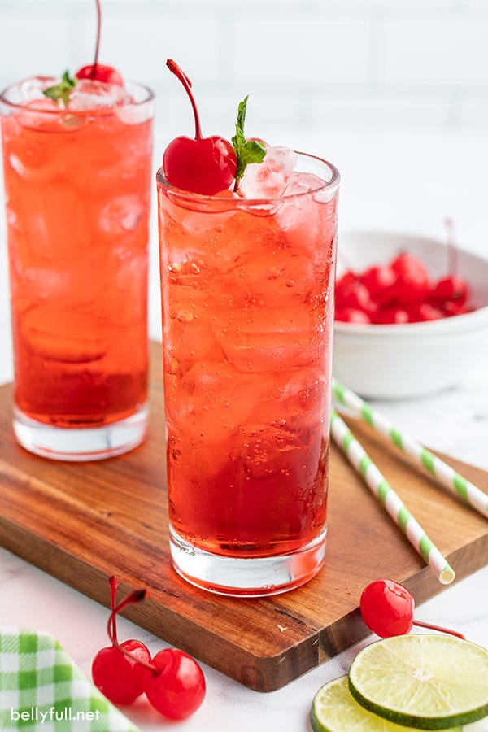

Kiddie Cocktails are an iconic drink from my childhood. Every restaurant my family went to, I would order one. The grenadine, the sprite, and (most impotantly) the maraschino cherry, combine together to make a delicious drink.
I, as a 20 year old, still order kiddie coctails when I am in the mood.
